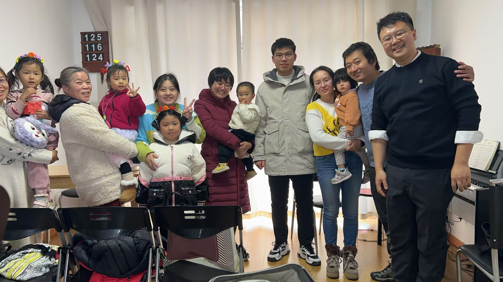

Shengjian Zhou
Hi! My name is Shengjian Zhou (周圣建); you can call me John. I am from MAINLAND China. I am from another Christian in China. When one day I was searching church history online, I found the story of Joseph Smith and other holy scriptures. They shocked me, inspired me, and gave me a lot of joy. I invite you to come unto Christ and have a higher joy.
Hobbies: Research Computers (Programming First Prize in Anhui Province); Always love to help people fix their
computer for free; A fan of Minecraft